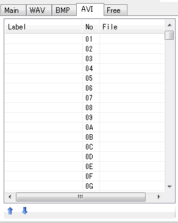

No
File
Move up（
Move down（
| Tab properties |
|---|
| [AVI] tab |
"AVI tab" manages AVI cell list used in DTX score
AVI can handle 1295 AVI files(AVI cell).
Each AVI cells have the number 01-ZZ (36-decimal expression), and each cells have one label and one filename.
Please see "Movie property" to know how to specify these items.
To playback the movie in DTXMania, you have to install the CODEC related to the movie file in advance. Roughly speaking, there are two type of CODECs ... VFW (Video for Windows) and DirectShow. DTXMania supports VFW only.

Label
No
File
Move up（ ）
）
Move down（ ）
）
It shows the lavel named to the AVI cell.
In the DTX file, the lavel strings are used to the comments of #AVI command.
The number of AVI cell. It has the value 01-ZZ (36-decimal expression).
The chips drawn on the score are distinguished by the number.
The movie filename related to the AVI cell.
It is represented as the relative path from the DTX file you're making.
It move up/down the AVI cell in the AVI cell list.
It causes the decrement/increment the number of the AVI cell,
and the chip's number on the score are also changed automatically.